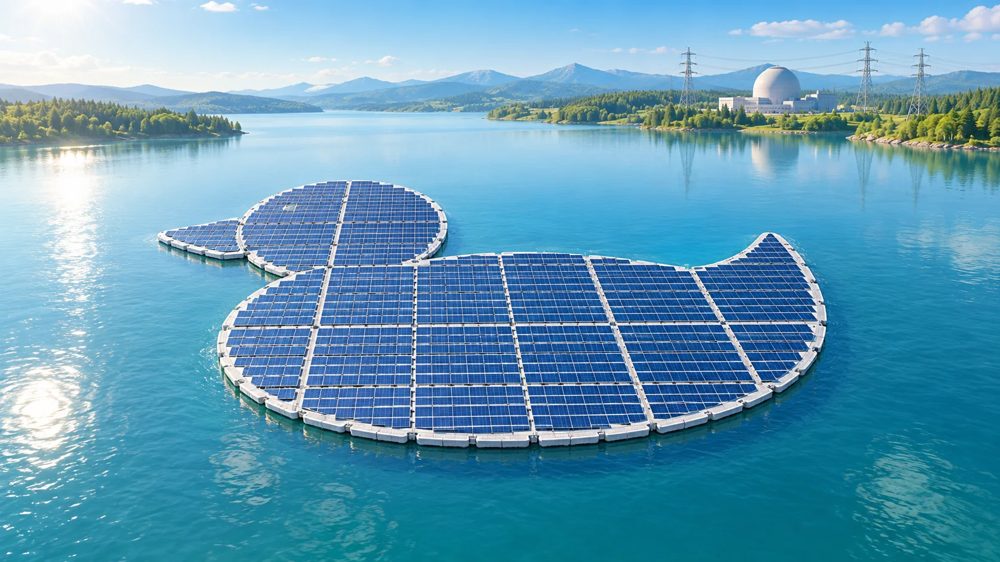
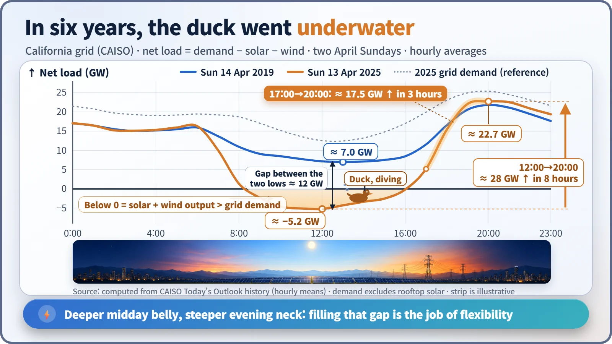
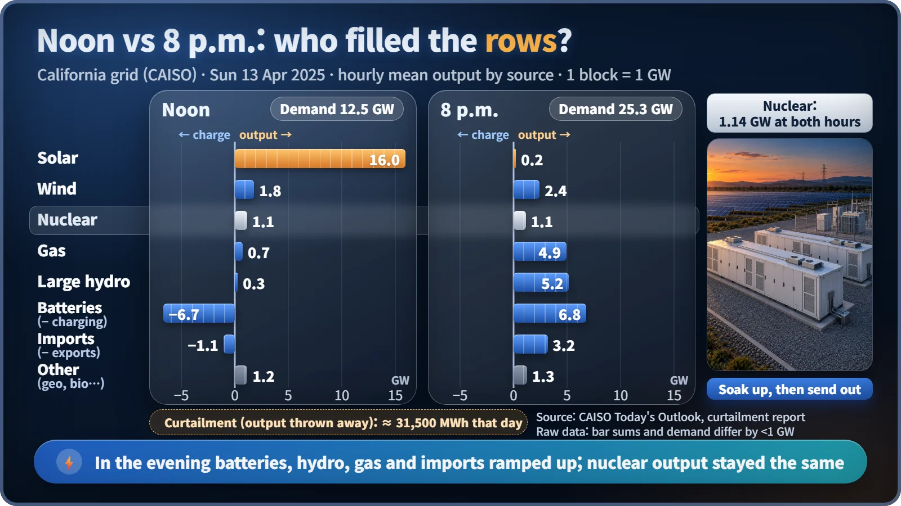

Plant Operation, Control & the Grid · 246
When the Sun Rises Over the Tetris Well — The Duck Curve and How Nuclear and Renewables Share a Grid
Solar empties the midday hours and leaves a steep evening climb. The real question is not nuclear versus renewables, but who fills the gap.

On a grid with lots of solar, the share left for every other power source, the net load, sags at midday and shoots up at sunset. That "duck curve" turns the question of nuclear and renewables into a practical one: who absorbs the midday surplus, and who fills the evening gap? [3]
The duck is "what's left over"
The power industry has a famous duck. In 2013, California's grid operator (CAISO) drew a chart of where its electricity picture was heading, and the curve looked unmistakably like a duck floating on water: a belly that sags at midday and a long neck that shoots up around sunset. Ever since, that shape has been called the duck curve.
A grid has to match the electricity it makes with the electricity it uses at every moment. Solar and wind, however, deliver only as much as the sunshine and the breeze allow. So grid operators do this calculation:
Net load = electricity demand − solar output − wind output
Net load is what's left after the weather has done its part: the amount that nuclear, gas, hydro, batteries and power from neighboring regions have to cover between them. The duck curve is not a demand curve. It is this net load curve. The shape appears not because people use less electricity, but because solar fills the midday hours on their behalf. [1]
In six years, the duck went underwater
Using CAISO's published demand and generation data, we picked one similar Sunday in April 2019 and one in April 2025 and calculated net load with the formula above (hourly averages).
On 14 April 2019, the midday low in net load was about 7.0 GW. At noon on 13 April 2025, it was about −5.2 GW, below zero. That means solar and wind alone produced more than the grid's demand. The duck's belly had dived beneath the surface.

The neck got steeper too. Net load at 8 p.m. that evening was about 22.7 GW: a climb of roughly 28 GW in eight hours, about 17.5 GW of it in just the three hours from 5 p.m. to 8 p.m. This compares only two dates, but several analyses agree that California's spring midday low keeps getting deeper year after year. As fast as the sun sets, other generators, batteries and imported power have to fill the gap. [1] [3]
Think of it as Tetris: two jobs, not one
Picture a game of Tetris. The height of the well is demand at that hour, and the falling blocks are power sources. The rows have to fill exactly for the game to keep going.
The trouble is that the solar block is a big piece whose shape you don't get to choose. The weather picks it. At noon on a spring day, this piece is bigger than the well and sticks out over the top. If it still overflows after every other piece has been shrunk as far as possible, there are three options: park it in the side compartment (batteries or pumped hydro), pass it to the next well (a neighboring region), or cut it off and throw it away. That last option is called curtailment: renewable electricity that could have been generated but that the grid could not take. In 2024 alone, California curtailed about 3.4 TWh this way, and 93% of it was solar. [4]
The evening is the reverse. As the big piece disappears, empty rows pile up fast, and the pieces whose shape can change have to fill them quickly. This ability to absorb a surplus and quickly cover a shortfall is called flexibility. The International Energy Agency (IEA) defines it as a power system's ability to manage the variability and uncertainty of supply and demand reliably and economically, across all timescales. [5]
Noon and 8 p.m.: who filled the rows?
Comparing two hours on 13 April 2025 makes the division of labor clear.
At noon, solar produced about 16 GW, while demand was only about 12.5 GW. Batteries soaked up about 6.7 GW as charging, and about 1.1 GW was sent to other regions. Gas throttled down to about 0.7 GW and large hydro to 0.3 GW. What was still left over was thrown away: curtailment that day came to about 31,500 MWh. [2]
At 8 p.m., solar was almost zero. The space was filled by about 6.8 GW of battery discharge, about 5.2 GW of large hydro, about 4.9 GW of gas and about 3.2 GW of imports. The batteries, giving back in the evening what they had taken in at midday, were the stars of the day.

| Source (GW) | Noon | 8 p.m. |
|---|---|---|
| Solar | 16.0 | 0.2 |
| Batteries | −6.7 (charging) | +6.8 (discharging) |
| Large hydro | 0.3 | 5.2 |
| Gas | 0.7 | 4.9 |
| Imports | −1.1 (net export) | +3.2 |
| Nuclear | 1.14 | 1.14 |
| Grid demand | 12.5 | 25.3 |
And nuclear? California's nuclear output stayed almost unchanged at about 1.1 GW, before dawn, at noon and in the evening alike, like a flat horizontal block lying on the bottom of the well. That day, the ups and downs were handled by the other pieces. [1]
Should nuclear be the bottom block, or change shape?
A nuclear plant has two options.
The first is the California approach: hold a steady output and leave the swings to batteries, hydro, gas and interconnectors. Nuclear's costs are dominated by construction, with fuel a small share, so turning output down saves little money. Cutting output mostly means giving up electricity that could have been sold.
The second is for nuclear to carry a share of the flexibility too: load following, lowering and raising output within the plant's design and operating limits. France, with its high nuclear share, has done this as routine practice. In South Korea, on spring weekends with surplus power, nuclear output has been reduced alongside solar curtailment, minimized coal generation and use of pumped hydro. Changes in a nuclear plant's output also come with limits on speed and range that protect the core and the fuel. [7]
Which is the right answer? It differs from grid to grid. A system that already has plenty of batteries, hydro and interconnections cannot use the same strategy as one that doesn't.
Not who wins, but who fills the gap
This topic is often framed as a fight: "nuclear versus renewables." Put the international agencies' reports side by side, though, and the picture is more nuanced.
In a 2019 report, the OECD Nuclear Energy Agency (OECD-NEA) pointed out that as the share of variable renewables grows, system costs such as grid reinforcement, balancing and storage rise, and that these costs are not well reflected in market prices. [6] The IEA, in a 2024 report, drew on grids that already run high shares, such as Denmark and South Australia, and concluded that integration challenges can be solved when investment in flexibility and transmission goes hand in hand. [5]
The emphasis differs, but the common ground is clear: flexibility is the key resource, and who provides how much of it depends on the conditions of each grid. On the right mix, conclusions diverge depending on cost assumptions and available resources.
Key takeaways
Net load is demand minus solar and wind. As solar grows, its midday belly sinks (surplus to absorb) and its evening neck steepens (a ramp to cover). Batteries, hydro, gas, interconnectors and, on some grids, nuclear load following share that job. So the next time you see a duck curve, ask who is filling the gap between its belly and its neck: each grid's answer is how it combines nuclear and renewables.